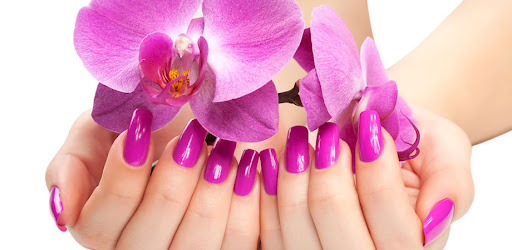
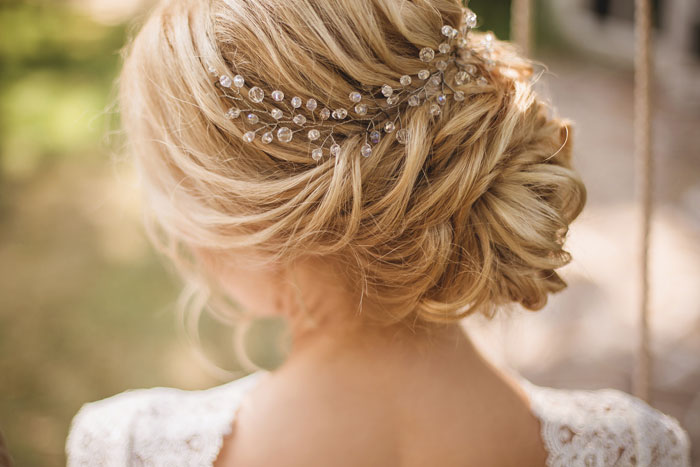

Despre noi
În prezentarea noastră, vreau să ne concentrăm pe ideea deschiderii beauty salon în Iargara și modul în care ne putem diferenția prin oferirea serviciilor de calitate și o experiență unică pentru clienți. Numele salonului nostru este Beauty Salon care ne reprezintă și reflectă pasiunea noastră pentru frumusețe și îngrijirea podoabei capilare.
Pentru început, am deschis afacerea individuală într-un spațiu ce se află într-o zonă bine poziționată în Iargara, care să fie ușor accesibil pentru clienți. Pentru a fi competitive pe piață, trebuie să ne asigurăm că oferim servicii de calitate. Pentru aceasta, putem asigura serviciile noastre și bunele abilități de comunicare. De asemenea, vom investi în echipament și produse de înaltă calitate pentru a obține rezultate impecabile.
Un alt aspect important este crearea unei atmosfere plăcute și relaxante în salon. Am ales o tematică elegantă și modernă pentru decor, cu accente de culoare și mobilier confortabil. De asemenea, ar trebui să promovăm serviciile noastre în mod eficient. Și am ales să creăm site-ul sau o pagină de social media pentru salonul nostru, unde putem expune fotografii cu tunsorile realizate și să oferim servicii de îngrijire a părului. Un factor cheie în succesul nostru va fi relația strânsă și cadrul de lucru bazat pe încredere cu clienții noștri. Vom încerca să ne construim o bază solidă de clienți fideli, oferindu-le o atenție personalizată și servicii impecabile.

În final, deschiderea unui Beauty Salon în Iargara reprezintă o oportunitate fantastică de a aduce pasiunea noastră pentru tuns până la un alt nivel și de a avea succes într-o afacere proprie. Cu angajament, dedicație și o atenție deosebită la detalii, suntem sigure că salonul nostru va deveni o destinație de frumusețe preferată în Iargara. Ne dorim succes în inițiativa noastră și să ne îndeplinim visele de a avea propriul Beauty Salon!